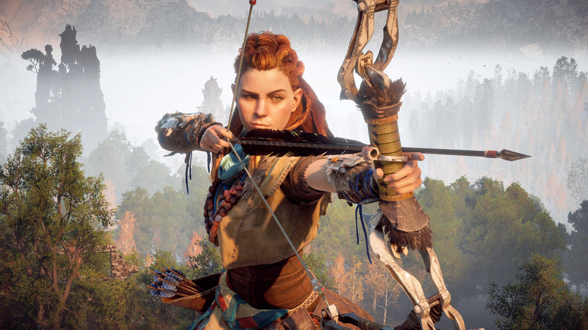
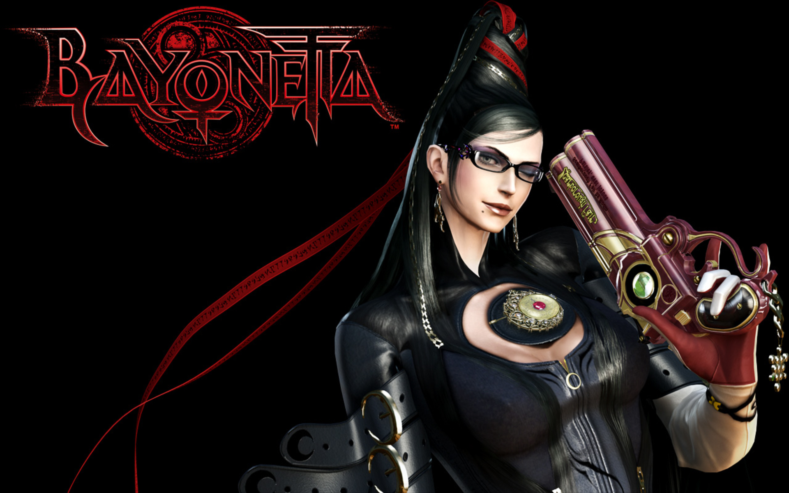
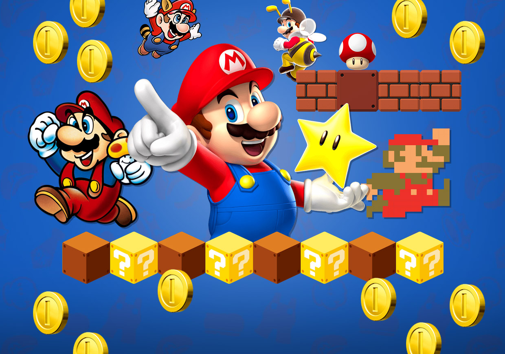
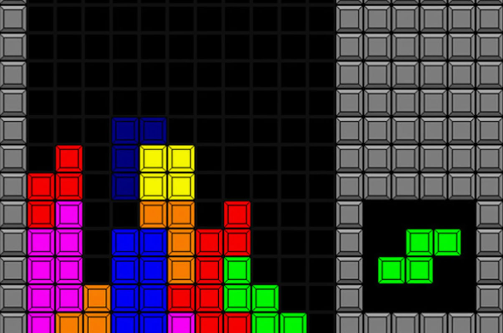

Вы получили доступ к НОВОСТЯМ ДЛЯ БЫВАЛЫХ ГЕЙМЕРОВ!
Информация для начинающих киберспортсменов:
- Недавние релизы игр: В ноябре 2024 года ожидаются важные релизы, такие как "Dragon Quest III HD-2D Remake" и "LEGO Horizon Adventures", которые обещают привлечь внимание как старых, так и новых поклонников игр. Эти релизы охватывают разнообразные жанры и обеспечивают увлекательный геймплей для всех игроков.
- Упражнения для спины для геймеров:Долгое время за компьютером может вызывать дискомфорт в спине. Рекомендуется делать растяжки для поясницы, выполнять укрепляющие упражнения для мышц кора и соблюдать правильную осанку, чтобы избежать проблем со спинойвая компьютерная игра: Самая первая компьютерная игра, созданная в 1958 году, — это "Tennis for Two". Она стала важной вехой в истории видеоигр и положила начало дальнейшему развитию этой индустрии .
- Сткоторые все еще популярны: Классические игры, такие как "Tetris" и "Super Mario Bros.", остаются актуальными благодаря своей простоте и увлекательному геймплею. Эти игры доступны на современных платформах и продолжают привлекать внимание новых игроков .
- Обновление личение объема оперативной памяти и замена видеокарты являются ключевыми шагами для повышения производительности вашего ПК. Эти улучшения обеспечивают лучшую графику и плавность игрового процесса .
- Польза головоломок для мозга: такиеие как "Portal" и "The Witness", развивают логическое мышление и креативность. Они полезны не только для улучшения когнитивных навыков, но и для расслабления и снятия стресса после напряженного игрового дня .
| Игра | Описание | Увеличенное изображение |
|---|---|---|
|  | Horizon Zero Dawn, разработанная студией Guerrilla Games, погружает игрока в мир, где природа сосуществует с гигантскими механическими существами. Игрок берет на себя роль Элой, охотницы из племени Нора, пытающейся выяснить причины упадка человечества и происхождение роботов-животных. | Увеличенное изображение |
 |
The Witcher 3: Wild Hunt от польской студии CD Projekt Red — это фэнтезийная ролевая игра, основанная на книгах Анджея Сапковского о ведьмаке Геральте из Ривии. Геральт — профессиональный охотник на монстров, который отправляется на поиски своей приёмной дочери Цири, скрывающейся от таинственной Дикой Охоты. | Увеличенное изображение |
|  | Bayonetta, разработанная студией PlatinumGames, — это экшн-игра в жанре hack and slash, где главный персонаж, ведьма Байонетта, сражается с множеством врагов в сверхстильных боях. Байонетта обладает сверхчеловеческими способностями и множеством уникальных оружий, которые позволяют ей выполнять эффектные комбо-атаки. | Увеличенное изображение |
Для старых геймеров, которые помнят клацанье джойстиков на первых игровых консолях и шум модемов, мир новых игр сегодня полон сюрпризов и возможностей. Если вы все еще с теплотой вспоминаете пиксели "Contra" или бесконечные уровни "Mario," вам стоит открыть для себя новинки, которые продолжили эволюцию этих классических жанров и перенесли их в мир реалистичной графики и интерактивных сюжетов.

Популярная игра — Mario

Популярная игра — Tetris